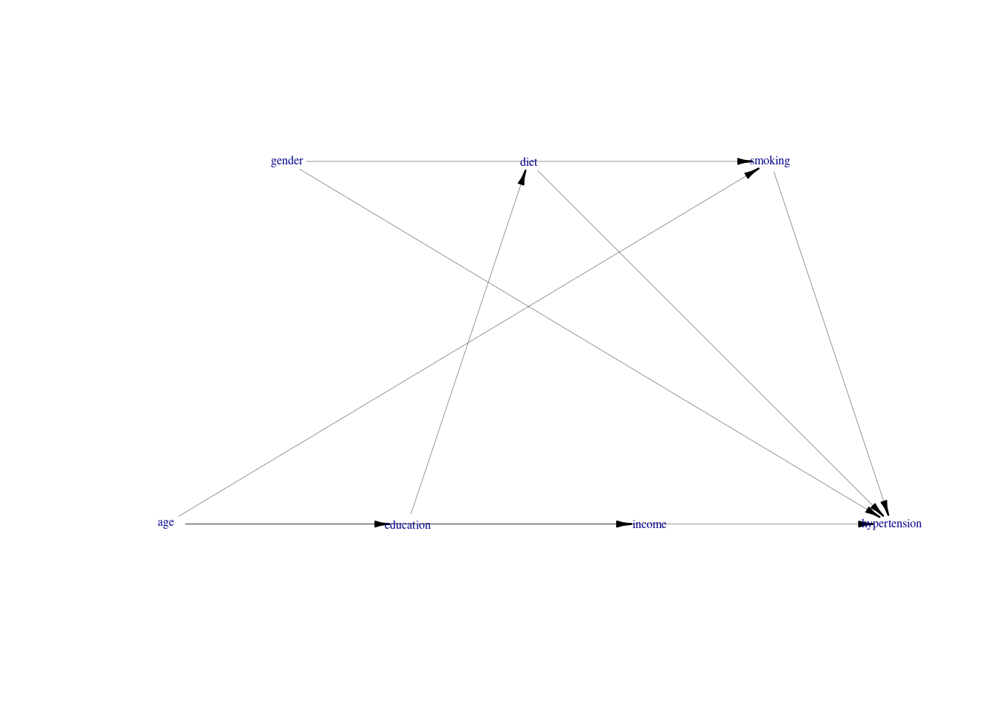
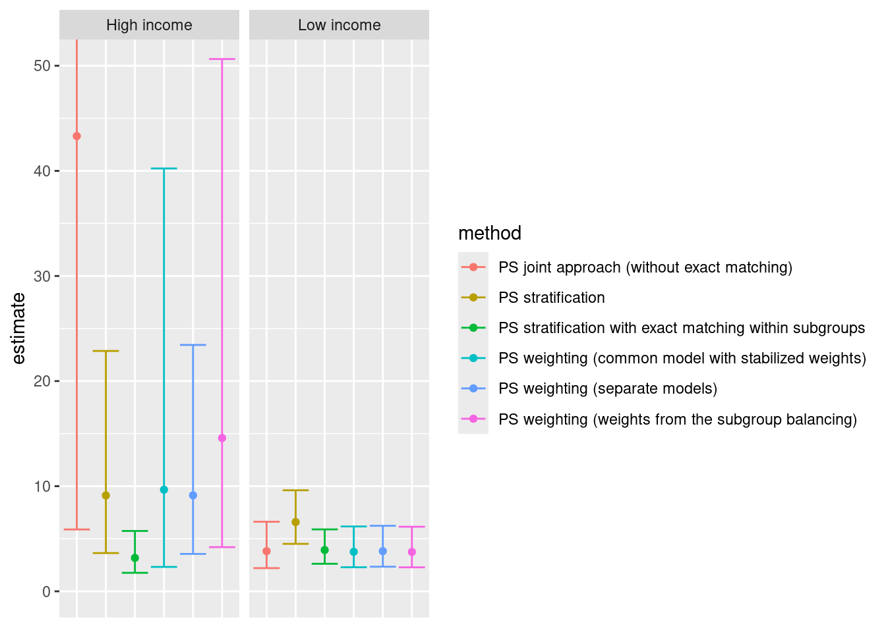

require(simcausal)
D <- DAG.empty()
D <- D +
node("age", distr = "rnorm",
mean = 2, sd = 4) +
node("gender", distr = "rbern",
prob = plogis(4)) +
node("education", distr = "rbern",
prob = plogis(3 + 5 * age)) +
node("diet", distr = "rbern",
prob = plogis(1 - 3 * education)) +
node("income", distr = "rbern",
prob = plogis(2 - 5 * education - 4 * age)) +
node("smoking", distr = "rbern",
prob = plogis(1 + 1.2 * gender + 2 * age)) +
node("hypertension", distr = "rbern",
prob = plogis(1 + log(3) * diet +
log(1.3) * age +
log(3.5) * smoking +
log(0.5) * gender))
Dset <- set.DAG(D)4 Effect Modification Analysis within the Propensity score Framework
Mohammad Ehsanul Karim ![]()
Observational comparative effectiveness studies often adopt propensity score analysis to adjust for confounding. Although this approach is relatively straightforward to implement, careful thought is needed when treatment effect heterogeneity is present. This chapter illustrates the estimation of subgroup-specific treatment effects using (traditional) covariate adjustment methods, propensity score matching, propensity score weighting, propensity score stratification, and covariate adjustment using propensity scores.
4.1 Simulation
We will use the following data-generation model:
Below is the diagram, with pink lines representing open backdoor path.
using the following vertex attributes: NAdarkbluenone100.50using the following edge attributes: black0.210.60.5
We can now generate an example dataset:
Obs.Data <- sim(DAG = Dset, n = 50000, rndseed = 123)
Obs.Data$smoking <- as.character(Obs.Data$smoking)
Obs.Data$income <- as.factor(Obs.Data$income)
Obs.Data$income <- relevel(Obs.Data$income, ref = "1")Sample data from the hypothetical example of association between hypertension and smoking, where other variables such as income, age [centered], gender, education and diet also plays a role in the data generation process.
| age | gender | education | diet | income | smoking | hypertension | |
|---|---|---|---|---|---|---|---|
| 34901 | 12.29 | 1 | 1 | 1 | 0 | 1 | 1 |
| 149 | 10.40 | 1 | 1 | 0 | 0 | 1 | 1 |
| 10060 | 2.99 | 1 | 1 | 0 | 0 | 1 | 0 |
| 22220 | -4.31 | 0 | 0 | 0 | 1 | 0 | 1 |
| 9979 | -6.44 | 0 | 0 | 0 | 1 | 0 | 1 |
4.2 Covariate adjustment
4.2.1 Interaction approach
Below, we estimate a logistic regression model to assess whether the effect of smoking (the exposure) on hypertension is modified by income levels. This model considers the following variables:
- Outcome:
hypertension - Exposure variables:
smokingandincome - Confounders:
ageandgender
require(jtools)
fit.w.em <- glm(hypertension ~ smoking * income + age + gender,
family = binomial(link = "logit"),
data = Obs.Data)
results.model <- summ(fit.w.em, exp = TRUE)| exp(Est.) | 2.5% | 97.5% | z val. | p | |
|---|---|---|---|---|---|
| (Intercept) | 5.46 | 4.37 | 6.82 | 14.97 | 0.00 |
| smoking1 | 2.93 | 2.60 | 3.30 | 17.69 | 0.00 |
| income0 | 0.48 | 0.41 | 0.57 | -8.28 | 0.00 |
| age | 1.29 | 1.27 | 1.31 | 36.77 | 0.00 |
| gender | 0.54 | 0.43 | 0.67 | -5.55 | 0.00 |
| smoking1:income0 | 1.27 | 1.04 | 1.56 | 2.33 | 0.02 |
Results indicate that the interaction between smoking status and income level is statistically significant (p = 0.02).
If we expand previous model to adjust for an additional confounder education, we have:
fit.w.int <- glm(hypertension ~ smoking * income + age + gender + education,
family = binomial(link = "logit"),
data = Obs.Data)
results.int.model <- summ(fit.w.int, exp = TRUE)| exp(Est.) | 2.5% | 97.5% | z val. | p | |
|---|---|---|---|---|---|
| (Intercept) | 5.69 | 4.56 | 7.11 | 15.31 | 0.00 |
| smoking1 | 3.35 | 2.95 | 3.79 | 18.85 | 0.00 |
| income0 | 1.09 | 0.85 | 1.40 | 0.68 | 0.49 |
| age | 1.30 | 1.28 | 1.32 | 37.32 | 0.00 |
| gender | 0.54 | 0.43 | 0.67 | -5.58 | 0.00 |
| education | 0.42 | 0.35 | 0.51 | -8.87 | 0.00 |
| smoking1:income0 | 1.10 | 0.90 | 1.35 | 0.93 | 0.35 |
The interaction term between income and smoking is no longer statistically significant (p = 0.35).
We can generate a summary report from aforementioned effect modification analysis.
library(interactionR)
em.object <- interactionR(fit.w.em,
exposure_names = c("income0", "smoking1"),
ci.type = "mover", ci.level = 0.95,
em = TRUE, recode = FALSE)The table below depicts the adjusted odds ratios for income levels (high = 0, and low = 1). The variables CI.ll and CI.ul depict the lower and upper limits of the 95 percent confidence intervals, OR11 = \(OR_{A = 1, M = 1}\) , OR10 = \(OR_{A = 1}\), OR01 = \(OR_{M = 1}\) and OR00 captures the reference.
| Measures | Estimates | CI.ll | CI.ul |
|---|---|---|---|
| OR00 | 1.00 | NA | NA |
| OR01 | 2.93 | 2.60 | 3.30 |
| OR10 | 0.48 | 0.41 | 0.57 |
| OR11 | 1.80 | 1.63 | 1.98 |
| OR(smoking1 on outcome [income0==0] | 2.93 | 2.60 | 3.30 |
| OR(smoking1 on outcome [income0==1] | 3.72 | 3.14 | 4.41 |
| Multiplicative scale | 1.27 | 1.04 | 1.56 |
| RERI | -0.61 | -0.98 | -0.29 |
Similarly, for the analysis adjusting for an additional confounder education, we have:
| Measures | Estimates | CI.ll | CI.ul |
|---|---|---|---|
| OR00 | 1.00 | NA | NA |
| OR01 | 1.09 | 0.85 | 1.40 |
| OR10 | 3.35 | 2.95 | 3.79 |
| OR11 | 4.02 | 3.29 | 4.92 |
| OR(income0 on outcome [smoking1==0] | 1.09 | 0.85 | 1.40 |
| OR(income0 on outcome [smoking1==1] | 1.20 | 1.00 | 1.45 |
| OR(smoking1 on outcome [income0==0] | 3.35 | 2.95 | 3.79 |
| OR(smoking1 on outcome [income0==1] | 3.69 | 3.11 | 4.37 |
| Multiplicative scale | 1.10 | 0.90 | 1.35 |
| RERI | 0.59 | 0.03 | 1.27 |
| AP | 0.15 | 0.00 | 0.26 |
| SI | 1.24 | 1.01 | 1.53 |
# test run with additive model
Obs.Data$smoking <- as.numeric(as.character(Obs.Data$smoking))
Obs.Data$income <- as.numeric(as.character(Obs.Data$income))
fit.w.int.add <- glm(hypertension ~ smoking * income + age + gender + education,
family = gaussian(link = "identity"), data = Obs.Data)
interactions::sim_slopes(fit.w.int.add,
pred = smoking,
modx = income,
exp = TRUE,
robust = TRUE,
confint = TRUE,
data = Obs.Dat)JOHNSON-NEYMAN INTERVAL
When income is INSIDE the interval [-3.27, 16.87], the slope of smoking is
p < .05.
Note: The range of observed values of income is [0.00, 1.00]
SIMPLE SLOPES ANALYSIS
Slope of smoking when income = 0.00 (0):
Est. S.E. 2.5% 97.5% t val. p
------ ------ ------ ------- -------- ------
0.25 0.02 1.24 1.34 12.76 0.00
Slope of smoking when income = 1.00 (1):
Est. S.E. 2.5% 97.5% t val. p
------ ------ ------ ------- -------- ------
0.28 0.01 1.30 1.34 34.53 0.004.2.2 Stratification
This approach involves estimating a regression model in different strata of the discrete effect modifier income:
# Estimate the prognostic effect of smoking in low income individuals
fit.income1 <- glm(hypertension ~ smoking + age + gender,
family = binomial(link = "logit"),
data = subset(Obs.Data, income == 1))
# Estimate the prognostic effect of smoking in high income individuals
fit.income0 <- glm(hypertension ~ smoking + age + gender,
family = binomial(link = "logit"),
data = subset(Obs.Data, income == 0))The table below summarizes the adjusted odds ratios for smoking across the different income levels (low = 1, and high = 0) as obtained using the stratified approach.
| Value of income | Estimate | 2.5 % | 97.5 % | z value | p value |
|---|---|---|---|---|---|
| 1 | 3.07 | 2.71 | 3.47 | 17.65 | 0 |
| 0 | 3.59 | 3.02 | 4.26 | 14.57 | 0 |
Note that we can obtain the same results by estimating a regression model with an interaction term between the modifier and all covariates:
fit.all.int <- glm(hypertension ~ income * (smoking + age + gender),
family = binomial(link = "logit"), data = Obs.Data)
# Odds ratio for smoking in individuals with low income
exp(coef(fit.all.int)["smoking"])smoking
3.59026 # Odds ratio for smoking in individuals with high income
exp(coef(fit.all.int)["smoking"] + coef(fit.all.int)["income:smoking"]) smoking
3.066878 4.3 Propensity score matching
4.3.1 Stratification with exact matching within subgroups
We simulate another example dataset using aforementioned DAG, but restrict the sample size to 5000 individuals to reduce computational burden.
set.seed(123)
Obs.Data <- sim(DAG = Dset, n = 5000, rndseed = 123)We first estimate the propensity of smoking in the high-income group (income == 0):
require(MatchIt)
match.income.0 <- matchit(smoking ~ age + gender,
data = subset(Obs.Data, income == 0),
method = "full", distance = "glm", link = "logit")
data.income.0 <- match.data(match.income.0)Below, we draw a sample from the high-income group based on the hypothetical example of an association between hypertension and smoking. Here age [centered], gender, education, and diet are covariates.
age gender education diet income smoking hypertension distance
657 6.0810120 0 1 1 0 1 1 0.9999874
4932 1.6109860 1 1 0 0 1 0 0.9943155
252 -0.2475055 1 1 1 0 0 1 0.8525107
2693 -0.2511048 1 1 0 0 1 1 0.8516785
1646 -0.2836155 1 0 1 0 1 1 0.8439843
weights subclass
657 1.00000000 33
4932 1.00000000 33
252 0.04944134 23
2693 1.00000000 23
1646 1.00000000 4Now, we do the same for the low-income group (income == 1):
match.income.1 <- matchit(smoking ~ age + gender,
data = subset(Obs.Data, income == 1),
method = "full", distance = "glm", link = "logit")
data.income.1 <- match.data(match.income.1)We estimated the exposure effect from a weighted outcome model for the matched data. While the weights are essential for estimating the point estimate from the outcome model, the subclass variable assists in calculating the robust variance of the exposure effect estimate.
# Treatment effect estimation
fit.income.0 <- glm(hypertension ~ smoking + age + gender,
data = data.income.0, weights = weights,
family = quasibinomial("logit"))
fit.income.1 <- glm(hypertension ~ smoking + age + gender,
data = data.income.1, weights = weights,
family = quasibinomial("logit"))
# Robust variance calculation
fit.nexp.adj.res1 <- summ(fit.income.1,
robust = TRUE,
cluster = "subclass",
confint = TRUE)
fit.nexp.adj.res0 <- summ(fit.income.0,
robust = TRUE,
cluster = "subclass",
confint = TRUE)| Value of income | Est. | 2.5% | 97.5% | t val. | p |
|---|---|---|---|---|---|
| 0 | 3.76 | -43.15 | 50.66 | 0.16 | 0.88 |
| 1 | 1.36 | 0.90 | 1.81 | 5.78 | 0.00 |
4.3.2 Joint approach without exact matching within subgroups
Here, entire cohort data is used to estimate the propensity scores, and the effect modifier income is considered as a covariate in the propensity score model:
ps.formula <- as.formula("smoking ~ age + gender + income")
match.obj.j <- matchit(ps.formula, data = Obs.Data,
method = "full",
distance = "glm",
link = "logit")
match.data.j <- match.data(match.obj.j)fit.joint.no.exact <- glm(hypertension ~ smoking*income + age + gender,
data = match.data.j,
weights = weights,
family = binomial("logit"))
nem.nexp.adj.res <- interactions::sim_slopes(fit.joint.no.exact,
pred = smoking,
modx = income,
robust = "HC1",
cluster = "subclass",
johnson_neyman = TRUE,
confint = TRUE,
data = match.data.j)| Value of income | Est. | S.E. | 2.5% | 97.5% | z val. | p |
|---|---|---|---|---|---|---|
| 0 | 3.77 | 1.02 | 1.77 | 5.76 | 3.70 | 0 |
| 1 | 1.34 | 0.28 | 0.79 | 1.89 | 4.78 | 0 |
4.3.3 Joint approach with exact matching within subgroups
We specify the moderator variables name in the exact argument of the matchit function.
ps.formula.no.mod <- as.formula("smoking ~ age + gender")
match.obj.js <- matchit(ps.formula.no.mod, data = Obs.Data,
method = "full", distance = "glm",link = "logit",
exact = "income")
match.data.js <- match.data(match.obj.js)
fit.joint.exact <- glm(hypertension ~ smoking*income + age + gender,
data = match.data.js, weights = weights,
family = binomial("logit"))
js.nexp.adj.res <- interactions::sim_slopes(fit.joint.exact,
pred = smoking,
modx = income, # effect modifier
robust = "HC1",
cluster = "subclass",
johnson_neyman = FALSE,
confint = TRUE,
data = match.data.js)| Value of income | Est. | S.E. | 2.5% | 97.5% | z val. | p |
|---|---|---|---|---|---|---|
| 0 | 3.81 | 1.02 | 1.81 | 5.80 | 3.74 | 0 |
| 1 | 1.34 | 0.28 | 0.79 | 1.89 | 4.76 | 0 |
4.3.4 Interaction approach without exact matching within subgroups
Analysts incorporate relevant moderator-covariate interactions into the propensity score model that align with biological plausibility. For instance, in the case study we considered an interaction between age (a covariate) and income (a moderator), but did not include other interactions terms.
ps.formula.with.int <- formula("smoking ~ age*income + gender")
match.obj.i <- matchit(ps.formula.with.int, data = Obs.Data,
method = "full", distance = "glm",link = "logit")
match.data.i <- match.data(match.obj.i)
fit.int.no.exact <- glm(hypertension ~ smoking*income + age + gender,
data = match.data.i, weights = weights,
family = binomial("logit"))
i.nexp.adj.res <- interactions::sim_slopes(fit.int.no.exact,
pred = smoking,
modx = income,
robust = "HC1",
cluster = "subclass",
johnson_neyman = FALSE,
confint = TRUE,
data = match.data.i)| Value of income | Est. | S.E. | 2.5% | 97.5% | z val. | p |
|---|---|---|---|---|---|---|
| 0 | 3.77 | 1.02 | 1.77 | 5.77 | 3.70 | 0 |
| 1 | 1.35 | 0.28 | 0.80 | 1.91 | 4.77 | 0 |
4.3.5 Interaction approach with exact matching within subgroups
This method bears resemblance to the interaction approach for propensity score estimation. However, when it comes to matching, researchers match within each moderator subgroup.
match.obj.is <- matchit(ps.formula.with.int, data = Obs.Data,
method = "full", distance = "glm",link = "logit",
exact = "income")
match.data.is <- match.data(match.obj.is)
fit.int.exact <- glm(hypertension ~ smoking*income + age + gender,
data = match.data.is, weights = weights,
family = binomial("logit"))
is.nexp.adj.res <- interactions::sim_slopes(fit.int.exact,
pred = smoking,
modx = income,
robust = "HC1",
cluster = "subclass",
johnson_neyman = FALSE,
confint = TRUE,
data = match.data.is)| Value of income | Est. | S.E. | 2.5% | 97.5% | z val. | p |
|---|---|---|---|---|---|---|
| 0 | 3.75 | 1.02 | 1.75 | 5.75 | 3.68 | 0 |
| 1 | 1.37 | 0.28 | 0.82 | 1.92 | 4.88 | 0 |
4.4 Propensity Score Weighting
4.4.1 Common model
This approach adds confounder-moderator interactions in the common weight model.
require(WeightIt)
library(survey)
library(interactions)
W.out <- weightit(ps.formula.with.int,
data = Obs.Data,
method = "ps",
estimand = "ATT")
d.w <- svydesign(~1, weights = W.out$weights, data = Obs.Data)
fit2w <- svyglm(hypertension ~ smoking*income, design = d.w,
family = quasibinomial("logit"))
w.nexp.adj.res <- interactions::sim_slopes(fit2w,
pred = smoking,
modx = income,
confint = TRUE)| Value of income | Est. | S.E. | 2.5% | 97.5% | t val. | p |
|---|---|---|---|---|---|---|
| 0 | 2.66 | 0.63 | 1.42 | 3.89 | 4.23 | 0 |
| 1 | 1.32 | 0.25 | 0.83 | 1.82 | 5.24 | 0 |
We can adjust previous analysis model to adopt stabilized weights for the propensity score (stabilize = TRUE):
W.out.st <- weightit(ps.formula.with.int, data = Obs.Data,
method = "ps",
estimand = "ATT",
stabilize = TRUE)
d.sw <- svydesign(~1, weights = W.out.st$weights, data = Obs.Data)
fit2sw <- svyglm(hypertension ~ smoking*income + age + gender,
design = d.sw,
family = binomial("logit"))
ws.nexp.adj.res <- interactions::sim_slopes(fit2sw,
pred = smoking,
modx = income,
confint = TRUE)| Value of income | Est. | S.E. | 2.5% | 97.5% | t val. | p |
|---|---|---|---|---|---|---|
| 0 | 2.27 | 0.73 | 0.84 | 3.69 | 3.12 | 0 |
| 1 | 1.32 | 0.25 | 0.83 | 1.82 | 5.23 | 0 |
4.4.2 Separate models
Propensity score weighting approach with weights estimated separately from each subgroup:
ps.formula.with.no.int <- formula("smoking ~ age + gender")
W.out1 <- weightit(ps.formula.with.no.int,
data = subset(Obs.Data, income == 1),
method = "ps",
estimand = "ATT")
trimmed.weight.1.percent1 <- trim(W.out1$weights,
at = 1, lower = TRUE)| Weight | Min. | 1st Qu. | Median | Mean | 3rd Qu. | Max. |
|---|---|---|---|---|---|---|
| Raw weights | 0 | 0.01 | 0.11 | 0.45 | 1 | 11.69 |
| 1% truncated weights | 0 | 0.01 | 0.11 | 0.44 | 1 | 7.61 |
# Outcome model for income = 1
d.w1 <- svydesign(~1, weights = trimmed.weight.1.percent1,
data = subset(Obs.Data, income == 1))
fit2unadj1 <- svyglm(hypertension ~ smoking,
design = d.w1,
family = binomial("logit"))
# weight model for income = 0
W.out0 <- weightit(ps.formula, data = subset(Obs.Data, income == 0),
method = "ps", estimand = "ATT")
trimmed.weight.1.percent0 <- trim(W.out0$weights, at = 1, lower = TRUE)
# Outcome model for income = 0
d.w0 <- svydesign(~1, weights = trimmed.weight.1.percent0,
data = subset(Obs.Data, income == 0))
fit2unadj0 <- svyglm(hypertension ~ smoking,
design = d.w0,
family = binomial("logit"))
fit.exp.adj.res1 <- summ(fit2unadj1, confint = TRUE)
fit.exp.adj.res0 <- summ(fit2unadj0, confint = TRUE)| Value of income | Est. | 2.5% | 97.5% | t val. | p |
|---|---|---|---|---|---|
| 0 | 2.21 | 1.27 | 3.15 | 4.60 | 0 |
| 1 | 1.34 | 0.85 | 1.83 | 5.36 | 0 |
4.4.3 Weights from the subgroup balancing propensity scores
Subgroup balancing propensity scores for propensity score weighting:
w.out <- weightit(smoking ~ age + gender + income,
data = Obs.Data,
method = "ps",
estimand = "ATT")
w.out.sb <- sbps(w.out, moderator = "income")
d.w.sb <- svydesign(~1, weights = w.out.sb$weights, data = Obs.Data)
fit2unadj.sb <- svyglm(hypertension ~ smoking*income,
design = d.w.sb,
family = binomial("logit"))
sb.w.nexp.adj.res <- interactions::sim_slopes(fit2unadj.sb,
pred = smoking,
modx = income,
confint = TRUE,
johnson_neyman = FALSE)| Value of income | Est. | S.E. | 2.5% | 97.5% | t val. | p |
|---|---|---|---|---|---|---|
| 0 | 2.68 | 0.64 | 1.44 | 3.92 | 4.22 | 0 |
| 1 | 1.32 | 0.25 | 0.82 | 1.82 | 5.22 | 0 |
4.5 Covariate adjustment for the propensity score
4.5.1 As continuous covariate
An implementation of propensity scores as a continuous covariate in the outcome model:
# Separate models for each subgroup
# For subgroup income = 1
Obs.Data$ps[Obs.Data$income == 1] <- glm(ps.formula,
data = subset(Obs.Data, income == 1),
family = "binomial")$fitted.values
fit2adj1 <- glm(hypertension ~ smoking + age + gender,
family = binomial("logit"),
data = subset(Obs.Data, income == 1))
# For subgroup income = 0
Obs.Data$ps[Obs.Data$income == 0] <- glm(ps.formula,
data = subset(Obs.Data, income == 0),
family = "binomial")$fitted.values
fit2adj0 <- glm(hypertension ~ smoking + age + gender,
family = binomial("logit"),
data = subset(Obs.Data, income == 0))
fit.nexp.adj.res1 <- summ(fit2adj1, robust = TRUE, confint = TRUE)
fit.nexp.adj.res0 <- summ(fit2adj0, robust = TRUE, confint = TRUE)| Value of income | Est. | 2.5% | 97.5% | z val. | p |
|---|---|---|---|---|---|
| 0 | 1.16 | 0.56 | 1.75 | 3.83 | 0 |
| 1 | 1.37 | 0.96 | 1.77 | 6.61 | 0 |
# Common model
Obs.Data$ps <- glm(ps.formula.with.int, data = Obs.Data,
family = "binomial")$fitted.valuesWarning: glm.fit: fitted probabilities numerically 0 or 1 occurredfit2adjc <- glm(hypertension ~ smoking*income + age + gender + ps,
family = binomial("logit"),
data = Obs.Data)
c.nexp.adj.res <- interactions::sim_slopes(fit2adjc,
pred = smoking,
modx = income,
confint = TRUE,
data = Obs.Data)| Value of income | Est. | S.E. | 2.5% | 97.5% | z val. | p |
|---|---|---|---|---|---|---|
| 0 | 1.17 | 0.29 | 0.61 | 1.74 | 4.07 | 0 |
| 1 | 1.43 | 0.23 | 0.98 | 1.87 | 6.30 | 0 |
4.5.2 As quantiles
The propensity scores as a categorical covariate, broken by quintiles, in the outcome model.
Obs.Data$ps <- glm(ps.formula.with.int,
data = Obs.Data,
family = "binomial")$fitted.values
quintiles <- quantile(Obs.Data$ps,
prob = seq(from = 0, to = 1, by = 0.2),
na.rm = T)
Obs.Data$psq <- cut(Obs.Data$ps, breaks = quintiles,
labels = seq(1,5), include.lowest = T)
Obs.Data$psq <- as.factor(Obs.Data$psq)
fit2adjq <- glm(hypertension ~ (smoking*psq)*income,
family = binomial("logit"),
data = Obs.Data)
cq.nexp.adj.res <- interactions::sim_slopes(fit2adjq,
pred = smoking,
modx = income,
confint = TRUE,
data = Obs.Data)| Value of income | Est. | S.E. | 2.5% | 97.5% | z val. | p |
|---|---|---|---|---|---|---|
| 0 | 3.08 | 0.63 | 1.85 | 4.32 | 4.91 | 0 |
| 1 | 2.60 | 0.47 | 1.68 | 3.51 | 5.56 | 0 |
4.6 Propensity Score Stratification
Here is an implementation of propensity score stratification approach by using the marginal mean weighting through stratification (MMWS):
match.obj <- matchit(ps.formula, data = Obs.Data,
method = "subclass", subclass = 3,
estimand = "ATT", min.n = 10)
data.subclass <- match.data(match.obj)
subclass.fit <- glm(hypertension ~ smoking*income,
family = binomial("logit"),
data = data.subclass,
weights = weights)
subclass.nexp.adj.res <- interactions::sim_slopes(subclass.fit,
pred = smoking,
modx = income,
confint = TRUE,
robust = "HC3",
johnson_neyman = FALSE,
data = data.subclass)| Value of income | Est. | S.E. | 2.5% | 97.5% | z val. | p |
|---|---|---|---|---|---|---|
| 0 | 2.21 | 0.47 | 1.29 | 3.13 | 4.71 | 0 |
| 1 | 1.89 | 0.19 | 1.51 | 2.26 | 9.78 | 0 |
4.7 Summary
The marginal odds ratios for smoking are summarized below

Version info
This chapter was rendered using the following version of R and its packages:
R version 4.2.3 (2023-03-15)
Platform: x86_64-pc-linux-gnu (64-bit)
Running under: Ubuntu 22.04.3 LTS
Matrix products: default
BLAS: /usr/lib/x86_64-linux-gnu/openblas-pthread/libblas.so.3
LAPACK: /usr/lib/x86_64-linux-gnu/openblas-pthread/libopenblasp-r0.3.20.so
locale:
[1] LC_CTYPE=C.UTF-8 LC_NUMERIC=C LC_TIME=C.UTF-8
[4] LC_COLLATE=C.UTF-8 LC_MONETARY=C.UTF-8 LC_MESSAGES=C.UTF-8
[7] LC_PAPER=C.UTF-8 LC_NAME=C LC_ADDRESS=C
[10] LC_TELEPHONE=C LC_MEASUREMENT=C.UTF-8 LC_IDENTIFICATION=C
attached base packages:
[1] grid stats graphics grDevices utils datasets methods
[8] base
other attached packages:
[1] interactions_1.1.5 survey_4.2-1 survival_3.5-3 Matrix_1.6-3
[5] interactionR_0.1.6 simcausal_0.5.6 scales_1.2.1 ggplot2_3.4.4
[9] xtable_1.8-4 dplyr_1.1.4 kableExtra_1.3.4 knitr_1.45
[13] cowplot_1.1.1 broom_1.0.5 MatchIt_4.5.5 jtools_2.2.2
[17] sandwich_3.0-2 lmtest_0.9-40 zoo_1.8-12 optmatch_0.10.7
[21] WeightIt_0.14.2 cobalt_4.5.2 table1_1.4.3
loaded via a namespace (and not attached):
[1] fontquiver_0.2.1 webshot_0.5.5 httr_1.4.7
[4] tools_4.2.3 backports_1.4.1 utf8_1.2.4
[7] R6_2.5.1 DBI_1.1.3 colorspace_2.1-0
[10] withr_2.5.2 tidyselect_1.2.0 curl_5.1.0
[13] compiler_4.2.3 textshaping_0.3.7 cli_3.6.1
[16] rvest_1.0.3 expm_0.999-7 flextable_0.9.4
[19] xml2_1.3.5 officer_0.6.3 fontBitstreamVera_0.1.1
[22] labeling_0.4.3 mvtnorm_1.2-3 askpass_1.2.0
[25] systemfonts_1.0.5 stringr_1.5.1 digest_0.6.33
[28] rmarkdown_2.25 svglite_2.1.2 gfonts_0.2.0
[31] pkgconfig_2.0.3 htmltools_0.5.7 highr_0.10
[34] fastmap_1.1.1 htmlwidgets_1.6.3 rlang_1.1.2
[37] rstudioapi_0.15.0 httpcode_0.3.0 shiny_1.8.0
[40] farver_2.1.1 generics_0.1.3 jsonlite_1.8.7
[43] car_3.1-2 zip_2.3.0 magrittr_2.0.3
[46] Formula_1.2-5 Rcpp_1.0.11 munsell_0.5.0
[49] fansi_1.0.5 abind_1.4-5 gdtools_0.3.4
[52] lifecycle_1.0.4 chk_0.9.1 stringi_1.8.2
[55] yaml_2.3.7 carData_3.0-5 promises_1.2.1
[58] crayon_1.5.2 lattice_0.20-45 splines_4.2.3
[61] pander_0.6.5 pillar_1.9.0 uuid_1.1-1
[64] igraph_1.5.1 codetools_0.2-19 crul_1.4.0
[67] glue_1.6.2 evaluate_0.23 msm_1.7.1
[70] mitools_2.4 fontLiberation_0.1.0 data.table_1.14.8
[73] vctrs_0.6.4 httpuv_1.6.12 gtable_0.3.4
[76] openssl_2.1.1 purrr_1.0.2 tidyr_1.3.0
[79] assertthat_0.2.1 xfun_0.41 mime_0.12
[82] later_1.3.1 ragg_1.2.6 viridisLite_0.4.2
[85] tibble_3.2.1 ellipsis_0.3.2 rlemon_0.2.1